El mayor colectivo beneficiado por el indulto masivo aprobado ayer es el de los insumisos , los objetores de conciencia que se negaron a realizar cualquier tipo de prestación social sustitutoria del servicio militar.
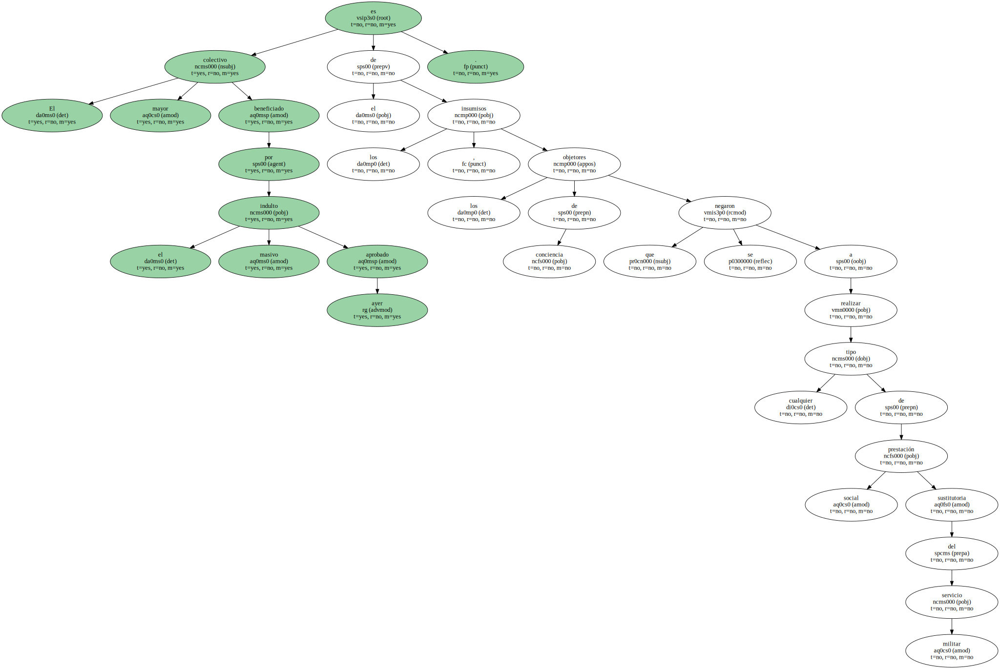La medida alcanzará a 460 , todos los que lo habían solicitado y que no estaban condenados por otros delitos o agravantes.
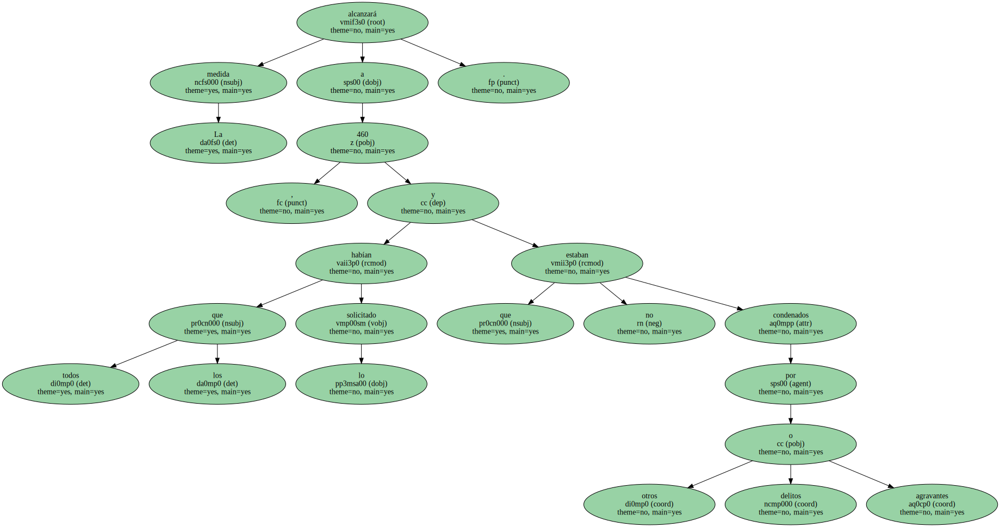De los indultados , sin embargo , sólo 30 estaban condenados a penas de cárcel y , entre éstos , " casi ninguno " se encontraba en estos momentos en prisión , según el Ministerio de Justicia.
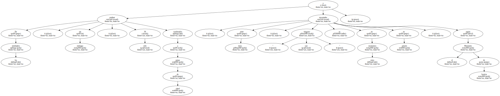REHABILITADOS Los 430 restantes estaban condenados a inhabilitación para desempeñar trabajos en la Administración , recibir becas , subvenciones y firmar contratos con organismos oficiales.
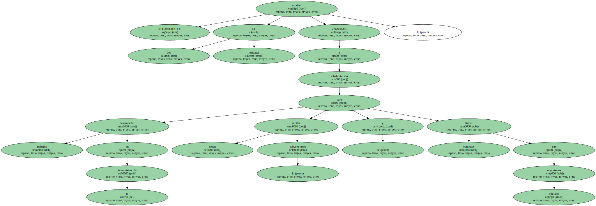Todos ellos verán extinguidas esas prohibiciones.
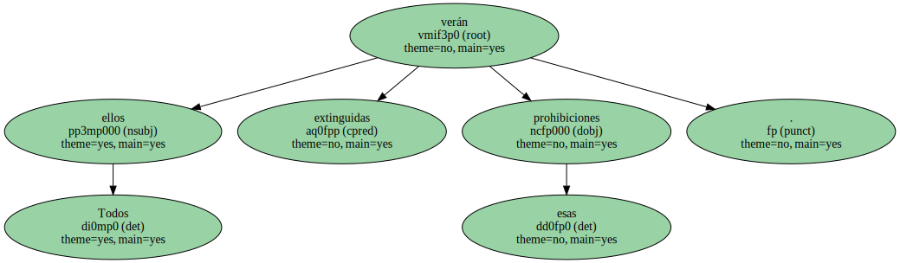Los que estaban inhabilitados por 10 años , según el Código Penal anterior a 1998 , verán rebajada su pena a cuatro años , con lo que ya la habrán cumplido.

A los condenados hasta cuatro años a partir de 1994 se les ha aplicado el indulto total.
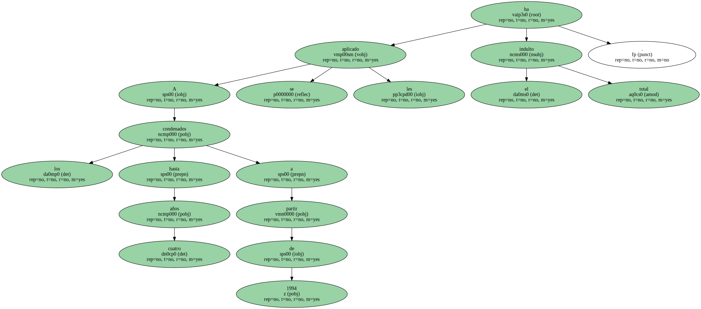INDULTO SELECTIVO El portavoz del Movimiento de Objeción de Conciencia ( MOC ) , Fernando Hernández , celebró el indulto , que atribuyó al " clamor social " , pero advirtió de que es un " indulto selectivo ".
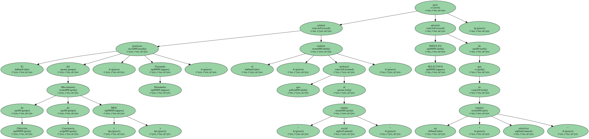Según sus datos , " hay miles de insumisos condenados que no han solicitado el indulto porque no creen haber cometido un delito , sino que han ejercido su derecho a la desobediencia civil ".
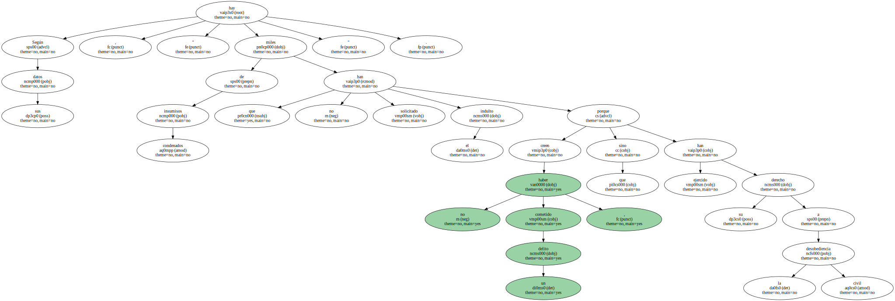Hernández recordó , además , que los considerados desertores del Ejército no se han beneficiado de la medida , al aplicárseles el Código Militar.
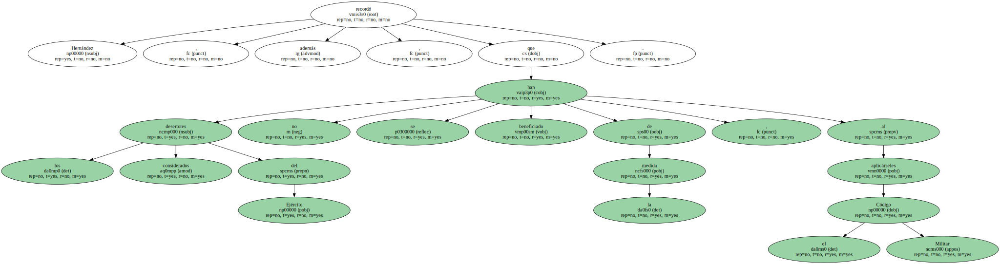ADVERTENCIA DE TRILLO El indulto de los insumisos ha coincidido con la llamada a filas del último reemplazo no voluntario , lo que crea una situación delicada para los llamados a filas que ahora se declaren insumisos.
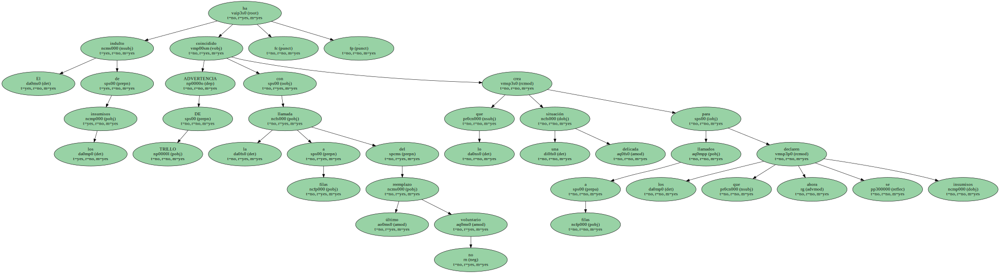A este respecto , el ministro de Defensa , Federico Trillo , advirtió ayer de que el que no se incorpore " tendrá las medidas sancionadoras que el Estado ha previsto ".
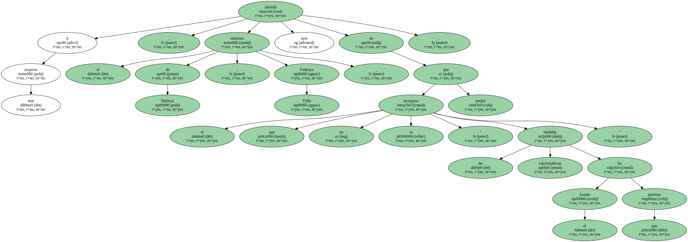" La insumisión está y va a seguir estando vigente el año próximo " , añadió.
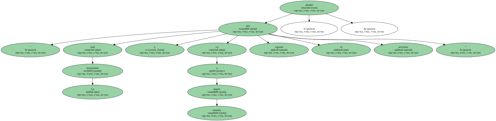